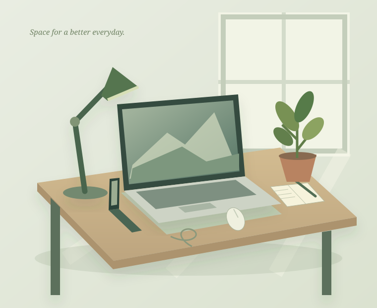

PRACTICAL GUIDES. THOUGHTFUL CHOICES.
A better desk.
Fewer wrong buys.
Make room for what matters. Clear, independent guides to desk setups, everyday tech and home-office essentials — for life in the US and Japan.

START WITH YOUR SPACE
A compact desk can still
have room to breathe.
Before you add another organizer, try the paper footprint test. Plan around the things you actually use.
Build a more useful small desk →THE DESKWISE LIBRARY
Find the right starting point.
Specific checks. Honest trade-offs.
Useful before you reach checkout.
Showing 12 guides
A small desk setup that leaves room to work
Plan a compact desk around your actual tasks, with a footprint test, storage trade-offs and a no-spend starting point.
Read the guideUSB-C cables: match power, data and display
A practical USB-C buying checklist that separates charging wattage, data speed, display support and cable length.
Read the guidePhone stands: stability before extra features
Choose a desk phone stand by case fit, tapping stability, charging clearance and viewing position instead of decorative features.
Read the guideDesk lighting without screen glare
Place a desk lamp around your screen, writing hand and room light, then choose a clamp or base that fits.
Read the guideCable management you can still unplug
Organize desk cables with service loops, removable ties and a practical split between fixed and frequently moved devices.
Read the guideLaptop stands: plan the keyboard as well
Compare fixed and folding laptop stands by keyboard access, stability, ventilation and the complete desktop footprint.
Read the guideA charger for a US–Japan desk and travel bag
Read a charger label, compare single-port and shared output, and separate plug compatibility from voltage compatibility.
Read the guideDesk mats: measure the mouse area first
Pick a desk mat by working area, edge placement, cleaning needs and surface trade-offs instead of a staged setup photo.
Read the guideBuild a budget home office in the right order
A staged home-office plan that prioritizes daily obstacles, existing equipment and complete purchase costs.
Read the guideThe ten-minute desk accessory buying check
A reusable checkout checklist for dimensions, compatibility, regional bundles, seller details and the option to buy nothing.
Read the guideAmazon US or Japan: choose the store before the product
Compare delivery, regional models, warranty and complete costs before shopping across Amazon USA and Japan.
Read the guideUSB-C hubs: build a port checklist first
Plan a USB-C hub around host-port support, monitor requirements, power pass-through and simultaneous device use.
Read the guideOur Amazon links currently open ordinary search results. They contain no affiliate tracking IDs and do not earn us commission. Guides are educational, not hands-on product reviews. Read our disclosure.